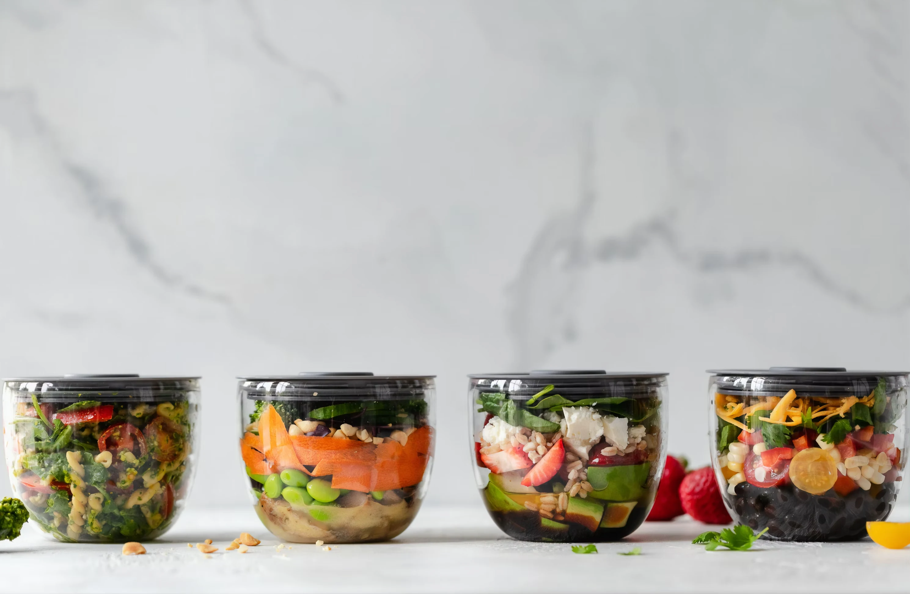

Sundhedstips for Studerende: Nemme Vaner i Hverdagen
Intro
Som studerende er det nemt at blive fanget i en hektisk hverdag fyldt med opgaver, deadlines og sociale aktiviteter. Det kan være en udfordring at prioritere sundhed og velvære i en travl hverdag. I denne artikel præsenterer vi en række enkle og effektive sundhedstips, der kan hjælpe dig med at integrere sunde vaner i din daglige rutine, så du kan føle dig bedre både fysisk og mentalt.
Sundhedstips
Her er nogle nemme vaner, du kan implementere i din hverdag:
- Drik nok vand: Sørg for at drikke tilstrækkeligt med vand i løbet af dagen. En god tommelfingerregel er at sigte efter mindst 8 glas vand dagligt. At holde sig hydreret kan forbedre din koncentration og energiniveau.
- Spis farverigt: Sørg for at inkludere frugt og grøntsager i dine måltider. Farverige fødevarer er ikke kun velsmagende, men de er også fyldt med vitaminer og mineraler, der er essentielle for din sundhed.
- Bevæg dig regelmæssigt: Find tid til at bevæge dig, selvom det bare er en kort gåtur mellem dine forelæsninger. At være aktiv i løbet af dagen kan hjælpe med at reducere stress og forbedre dit humør.
- Prioriter søvn: Giv din krop den hvile, den har brug for. En god nats søvn er afgørende for at kunne fokusere og præstere optimalt. Prøv at etablere en fast søvnrytme ved at gå i seng og vågne op på samme tid hver dag.
- Tag pauser fra skærmen: Studerende tilbringer ofte mange timer foran computeren. Husk at tage korte pauser for at strække dig og give dine øjne en pause. Dette kan forbedre din produktivitet og mindske træthed.
Narturlig mad
Hvad er Naturlig Mad? Naturlig mad refererer til uforarbejdede eller minimalt forarbejdede fødevarer, der er fri for kunstige ingredienser, konserveringsmidler og tilsætningsstoffer. Dette inkluderer friske grøntsager, frugter, fuldkorn, nødder, frø, bælgfrugter og magert kød eller fisk. At vælge naturlig mad kan føre til en bedre sundhed, mere energi og en forbedret mental klarhed, hvilket er særligt vigtigt for studerende, der jonglerer med studier og sociale aktiviteter.
En god måde at gøre det billigere at spise sund naturlig mad er at mealpreppe.
Her er nogen fordele ved mealprep:
- Tidsbesparelse: At forberede måltider på forhånd sparer tid i en travl uge.
- Sundere valg: Ved at planlægge måltider kan du sikre, at du spiser sundt og undgår hurtige, usunde valg.
- Budgetvenligt: At lave mad derhjemme er ofte billigere end at købe færdigretter eller spise ude.
- Mindsket madspild: Når du planlægger dine måltider, kan du købe præcist det, du har brug for, hvilket reducerer madspild.
Afrunding
Ved at implementere disse enkle vaner i din hverdag kan du forbedre din generelle sundhed og trivsel. Det handler ikke om at foretage store ændringer fra den ene dag til den anden, men snarere om at gøre små justeringer, der kan have en stor indvirkning over tid.